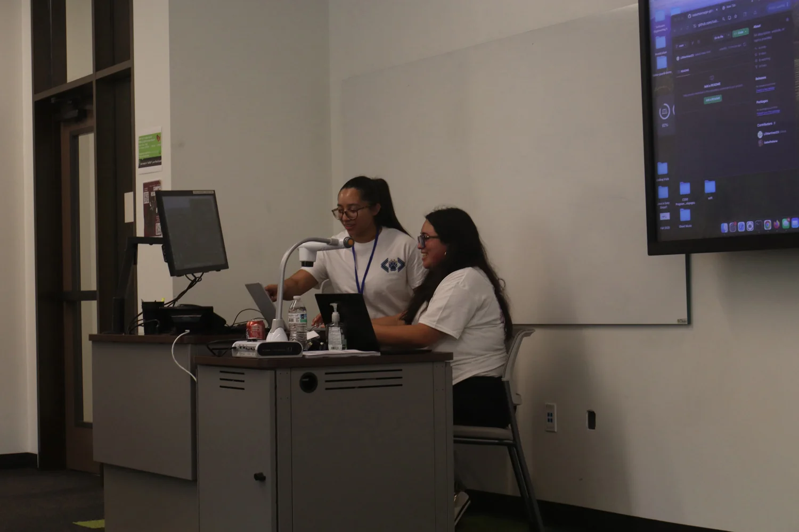
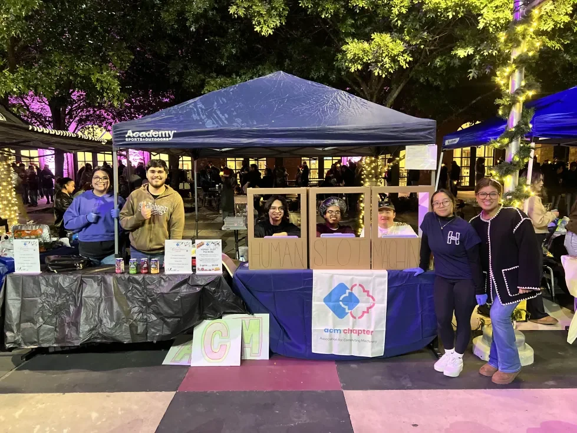
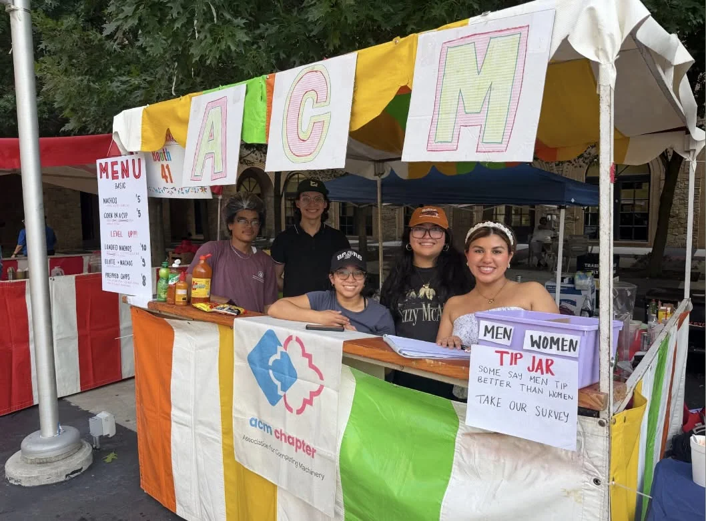

JagHacks
A fellow ACM officer and I co-presented an Introduction to Git workshop at JagHacks, our chapter’s annual 12-hour hackathon.
A little about me / San Antonio, TX
A student, a developer, and someone who’s always learning.
I study computer science at Texas A&M University–San Antonio, with a minor in Business Administration and an expected graduation date of December 2026. I enjoy turning everyday problems into useful web applications.
View my resume
The beginning
I didn’t know anything about coding when I chose computer science. My friends were choosing it too, and I thought it sounded like a fun, interesting degree. My first step was teaching myself HTML.
At the beginning of my first semester at TAMUSA, I got lucky: the Web Services team liked that I was teaching myself and hired me as a student worker. That opportunity gave me the space to develop and refine my skills. It’s been a heck of a ride since then, in a good way.
ACM · Fundraising Director · 2025–2026
With our ACM student chapter, I helped organize fundraising and community outreach. Lights of Esperanza and Festival de Cascarones, held annually at TAMUSA, brought us together to support the chapter and connect with our campus.
Our work received Fundraiser of the Year and Student Organization Community Service recognition. Beyond campus, I’ve also shared my experience with students at local schools.

A fellow ACM officer and I co-presented an Introduction to Git workshop at JagHacks, our chapter’s annual 12-hour hackathon.

A human slot machine, a chapter fundraiser, and an evening with our campus community. I helped organize fundraising with our ACM student chapter at this annual TAMUSA event.

Working the ACM booth at one of TAMUSA’s annual celebrations. Our chapter came together to raise funds and connect with our campus community.
Still growing
Each project gives me another chance to break a problem into smaller pieces, test an idea, and learn from what needs to change.
Web Services and ACM have helped me grow beyond writing code: communicating, collaborating, and becoming more comfortable contributing to a team.
Let’s connect